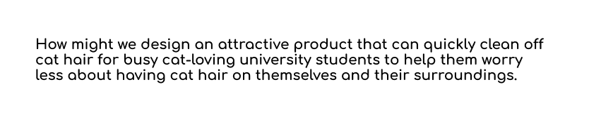

Design Phase
Design 100

30+ ideas
I started out this phase of designing and developing by looking at my how might we statement and listing out any and all ideas I had as a solution.
I was stuck for a bit on creating ideas, sketching them out helped me to visualise what I was writing down and create more ideas from them.
.png)
Prototyping the 3 selected ideas
Within the 30+ ideas, I had selected three that I gravitated towards to further develop them with testing and prototyping. These are the ones highlighted above.
I had found I liked solutions that I could further visualize and understand that they would be physically and technologically possible, making the ideas that involved part of a lint roller, the shape/function/idea much more preferred.
I felt the brush/lint roller fusion would allow for a gap to make a more attractive product as there wasn’t any need for the sticky adhesive, and there was a cover on it already.
I didn’t want to pick a similar product to test, in case the overall links between them all wouldn’t work. Leading to the robot idea, based on pre-existing robot vacuums, yet the shape would be different and it would have more brushes to easily collect the cat hair.
The last idea was a clothing cover-up, to protect the cat hair from the client's own clothing, by wearing the coverup on top instead.
I drew out details of the products, prototyped and tested them out to see if they would work and how successful they would be.
Brush/Lint roller fusion
This idea was to create a lint roller with a sort of cap/cover around it to hide the cat hair that is collected and to make it attractive and visually pleasant. I had then kept the shape of the lint roller and thought of using a sort of brush on the inside to pick up the hairs instead so that it could be collected and the product is more reusable.
The prototype was a cardboard model done to test the movement of the product with two barrels.
.gif)
From this testing I found out that the movement worked, it was better on fabrics and not on smooth surfaces. Movement is only possible in one direction with the original idea of picking up the hair from the brush. This was to have something parallel, (the stick on the top in the prototype) to push the hair out of the bristles. Due to the placement of the gap for the collection of cat hair, it would only work in one direction.
There is a way of having two barrels to cover up, the outer one needs to be cut out from the bottom. This meant it didn't cover up much of the inner barrel, which could make the product less attractive.
Robot cat hair cleaner
The idea for this was to make a small robot that vacuumed automatically, designed specifically for cat hair. To make it more specific for cat hair, I had thought of it having more bristles to brush off the hair better. I wanted it to be taller than existing robotic vacuums, to allow for more shape to make it more visually attractive and allow for more capacity.
Here is the prototyping of a robot that cleans up the cat hair. I had prototyped the movement of the robot, having a ball on the bottom to roll as the idea was for it to roll around.
.gif)
From the prototype I had learnt that the movement wasn’t the best, it was rough and only worked on smooth surfaces, making it hard to use on carpet. I also found it would be hard to program it to move via just a ball, as stabilizing it was difficult. I was also given feedback on the concept to allow for lights to help better see where the cat hair is cleaned.
Clothing cover-up
This idea was to have some sort of barrier between the user’s own clothing and the cat. This then became a large cover-up piece of clothing that the user would wear over the top of their own clothing.
This was a storyboard on the idea of wearing a large piece of clothing over the user to create an almost barrier to the user's own clothing and the cat hair. This can then be washed and put into the dryer to get rid of the cat hair from the fabric.
From the prototype, I had found that it would restrict mobility, due to the piece having a connection between the arms and the rest of the body, which would make it hard to raise the arms and move comfortably. As it overlays the clothing from the top, the underneath is still open, making it so that the potential for cat hair still reaches the user's clothing. It would also get too hot in the summer. It also means the user needs to be comfortable using their dryer often and cleaning it out, which would increase their usage of energy.
This product wouldn't be able to clean around the surrounding surfaces, which would make it less effective.
Final concept
The final concept/idea that I will be bringing to move on to the next phase of the double diamond is a fusion of both the lint roller/brush and the robot cat hair cleaner. I had found the prototypes of the lint roller/brush the most effective, however, to create a product that doesn't already exist and is too similar to what the user already owns, I’m choosing to add in the robot idea to help create a more attractive piece. It would also allow for the client to save on time if the process of cleaning the cat hair is done automatically.